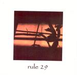

| Artist: | Rule 29 |
| Title: | Rule 29 |
| Label: | self produced |
| Length(s): | 41 minutes |
| Year(s) of release: | 2003 |
| Month of review: | [02/2004] |
| 1) | Awaken | 3.30 |
| 2) | Android Dream | 10.16 |
| 3) | The Thirteenth Hour | 2.58 |
| 4) | Empire | 8.27 |
| 5) | Carnival Son | 5.48 |
| 6) | Ancient Race | 11.06 |
Android Dream is one of the three longer tracks. It is built around a slowly played theme, and evokes plenty of images. Again, this is soundtrack type music played by a chamber orchestra. There is a sadness which breathes from this. In addition to Univers Zero one may also compare Rule 29 to Karda Estra, although the latter also uses vocals or to minimalists like Michael Nyman or Wim Mertens. The music is however not really minimalistic. I do think that people who favour the one may favour the other. The clarinet and flute which reign here remind me also of some of the American RIO bands, slightly dissonant, but also less gloomy than their European counterparts. Rather lightfooted and melodic, this one. The ending takes a long time sounding us out.
With the The Thirteenth Hour we have arrived at the shortest track on the album. Fast and playful, it is the piano and the flute again that take the lead. The music continues to be melodic and although light there is a disturbing undercurrent as well. Sometimes I get an impression of circus music, but then in a stylized, restrained way. As you can imagine, the effect is somewhat eerie.
The opening of Empire reminds of After Crying, but only until the flute sets in. In the case of After Crying this would have been a trumpet. There is some good melodic material here, but these parts that I like tend to be overrun by others which are less distinctive. What is that noise here, by the way. The guitar? Or is some transforming taking place. It does sound more like a dissonant kind of synth. As such Empire plods on. The piano brings everything back something more down to earth. But the effects do return again. The urgency in the piano is nice in between.
On Carnival Son, also the title reflects the circus type music that we are in for. The music alternates between a comedy caper tune and brooding synthesizer music (a warped kind of horn section?).
Ancient Race is mainly percussive piano and well one guesses flute. It is strange that at times the flute can sound so ehm garbled. I wonder whether he did this by processing or by simply playing it. Eerie fairy tale music I would desribe this. It is very picturesque, but with a lightness of tone that goes better with a fairy tale than a Hollywood production. The flute is quite dominant in the first part, and it is good to hear a simple piano in the middle. The melodic material is fine again, and bears being repeated over and over. This is why the music often remind me of the minimalists.